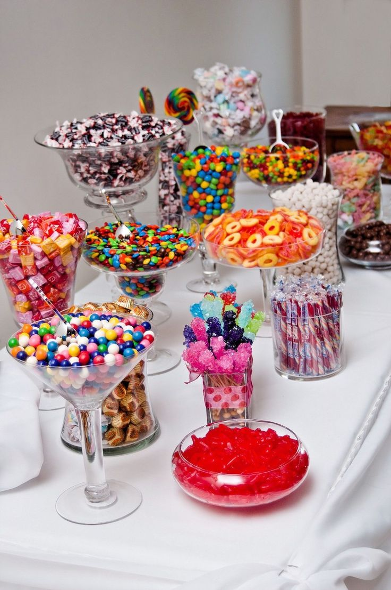
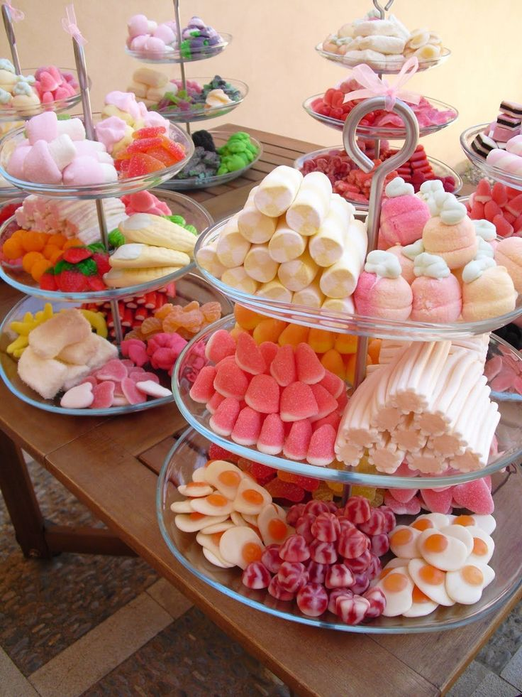

Somos un pequeño emprendimiento dedicado a la distribución de dulces para eventos sociales brindando diferentes opciones en nuestras presentaciones, teniendo barra de dulces, mesa de dulces, o arreglos de dulces para cada mesa.
Testimonios
Estos son algunos testimonios de nuestros clientes...
¡La experiencia en la dulcería fue increíble! Organizamos una fiesta de cumpleaños para mi hijo y decidimos incluir una mesa de dulces. La variedad de golosinas era asombrosa, desde chocolates hasta chicles de colores brillantes. Los invitados quedaron impresionados y los niños no podían contener su emoción. ¡Definitivamente volveremos por más para nuestro próximo evento!

¡La dulcería hizo de mi boda un evento inolvidable! Nos encargamos de cada detalle de la decoración, y la mesa de dulces fue el punto focal. La disposición de los dulces era elegante y tentadora. Desde los clásicos caramelos hasta los malvaviscos cubiertos de chocolate, todo estaba delicioso. Recibimos muchos elogios de nuestros invitados y, por supuesto, ¡disfrutamos cada bocado nosotros mismos!

La dulcería fue la solución perfecta para nuestro evento corporativo. Queríamos algo que pudiera atraer a personas de todas las edades, ¡y la mesa de dulces lo logró! Los empleados estaban encantados con la selección de dulces, y la presentación era impecable. No solo nos ayudó a endulzar el ambiente, sino que también fue un excelente tema de conversación entre los asistentes. ¡Gracias por hacer que nuestro evento sea tan memorable.